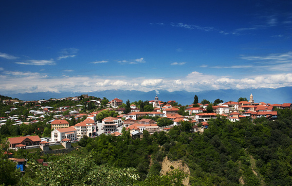

კახეთი
კახეთი — ისტორიულ-გეოგრაფიული რეგიონი აღმოსავლეთ საქართველოში. კახეთი ერთ-ერთი დიდი რეგიონია საქართველოს ფარგლებში. კახეთი ცნობილია კულტურულ ძეგლთა სიმრავლით. არაერთი ეკლესია-მონასტერი თუ ციხესიმაგრე იპყრობს ტურისტებისა და ექსკურსანტების ყურადღებას.
შეიტყვე მეტისაუკეთესო ტურები

- სიღნაღი კახეთის მხარეში მდებარე მუნიციპალიტეტია
- სიღნაღი ერთ-ერთი გამორჩეულად ლამაზი და საინტერესო რაიონია

- ძველი შუამთა — ქართული მართლმადიდებლური მონასტერი
- მონასტერი მდებარეობს ტყეში, თელავიდან 7 კმ-ში

- ალავერდი — საკათედრო ტაძარი და მონასტერი
- ტაძარი ერთ-ერთი უდიდესი საეკლესიო ნაგებობაა საქართველოში

- ნეკრესი — სამონასტრო კომპლექსი და ნაქალაქარი კახეთში
- დააარსა მეფე ფარნაჯომმა ძვ. წ. II-I საუკუნეში

- ნაკრძალის ნათელი ტყის კომპონენტია საკმლის ხე და ღვია
- დაარსდა 2003 წელს, მისი ფართობი 25114 ჰექტარია

- კომპლექსი დაარსდა VI საუკუნის I ნახევარში
- დავითის ლავრა გარეჯის სამონასტრო ცხოვრების ცენტრი იყო

- ისტორიულ წყაროებში იგი პირველად III საუკუნეში მოიხსენიება
- ციხე-ქალაქი უჯარმა მასშტაბური კომპლექსია

- იგი მსოფლიოში ერთ-ერთი საუკეთესოდ შემონახული პარკია
- ლაგოდეხის ეროვნული პარკი - მდებარეობს კახეთის მხარეში
გალერეა